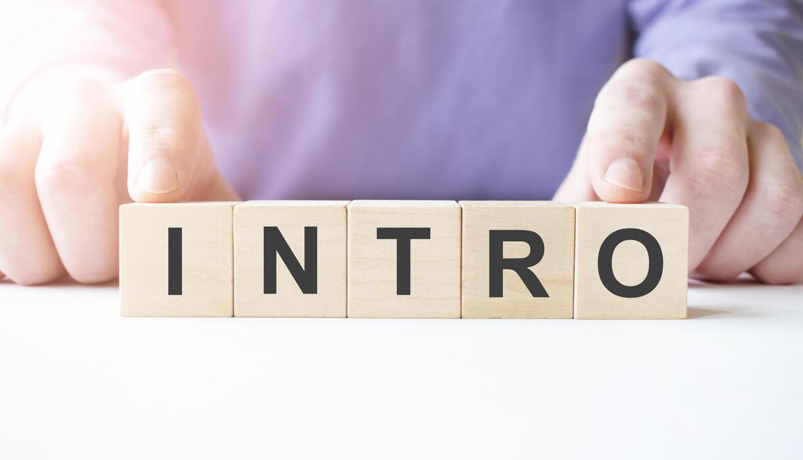
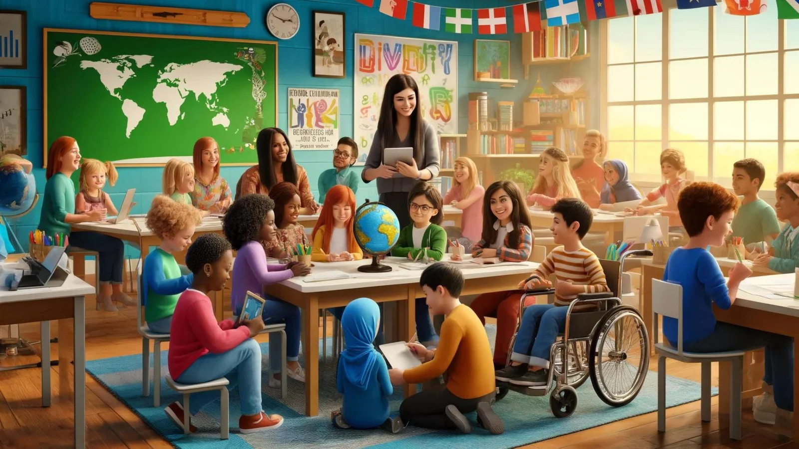
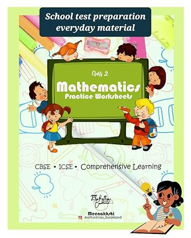
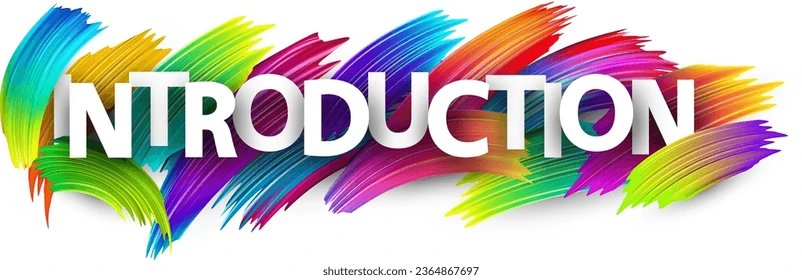
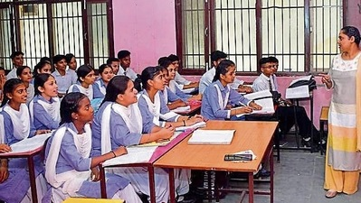
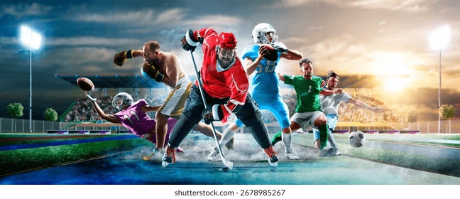

My name is Vansh Chaudhary. I am in grade 4B. I study in Vibgyor High. I am 8 years old.I like to do swimming, skating, gymnastics, chess, maths, cricket. There are five family members in my family, my mother, my father, my elder brother, my younger brother and me.

I am very good in sports. My favourite sports are skating, cricket, football, gymnastics,etc. I love skating and cricket the most. I have won many awards in skating.

I study in Vibgyor High school. I am in class 4B. I like all subjects but my favourite one is maths.

I go to many other classes like Vedantu, where I learn about Maths.I am very good in maths. You can see this website which I made for maths below.
you can enter this link for mathsMaths is my favourite subject and I have already gave information about it in "School Education".There are some more classes like GK,english,where I learn from Komal ma'am. and my favorite of all these is chess which taught to me by Sanjay sir and Shrikant sir

I have acheived many medals in life. Today, I wil tell many of them but not all. I have only one trophy which I love the most. I got this trophy from my favourite chess academy where I still go. There, I am the best in chess and it is my favourite Academy. I have also got more then 10 medals (from years 6-8).
My name is Vansh Chaudhary. I am in grade 2A. I study in Vibgyor High. There are five family members in my family, my mother, my father, my elder brother, my younger brother and me.

I am very good in sports. My favourite sports are skating, cricket, football, gymnastics,etc. I love skating and cricket the most. I have won many awards in skating.

I study in Vibgyor High school. I am in class 4B. I like all subjects but my favourite one is maths.

I go to many classes like gk, handwriting, skating, chess, swimming. Chess is my favourite class. That time, I hate skating because our teacher was so strict.

I have achieved many awards in life, so I will share some of the with you. When I was 5 years old, then I got my first medal in Vibgyor High. That medal was a silver medal. It was a race I was completely in 5th position but the player on first position fell and I ran at full speed so I got second. that time I had atleast 5 medals.
My name is Vansh Chaudhary. I study in Discovery Montessary school. My mother's name is Nikita Chaudhary and my father's name is Ashish Chaudhary. There are five family members in my family, my mother, my father, my elder brother, my younger brother and me.


I study in Vibgyor High school. I am in class 4B. I like all subjects but my favourite one is maths.
I didn't go to many classes that time but I just went to some classes like skating, I just joined skating that time and I hated the class but while growing it became my third favourite class(it is written in the 6-8 section).

That time I never got a award.
My name is Vansh Chaudhary. I am in grade 4B. I study in Vibgyor High. I am 8 years old.I like to do swimming, skating, gymnastics, chess, maths, cricket. There are five family members in my family, my mother, my father, my elder brother, my younger brother and me.
I am very good in sports. My favourite sports are skating, cricket, football, gymnastics,etc. I love skating and cricket the most. I have won many awards in skating.

I didn't study that time because I was too young.
I didn't go to any class that time.
That time I never got a award.